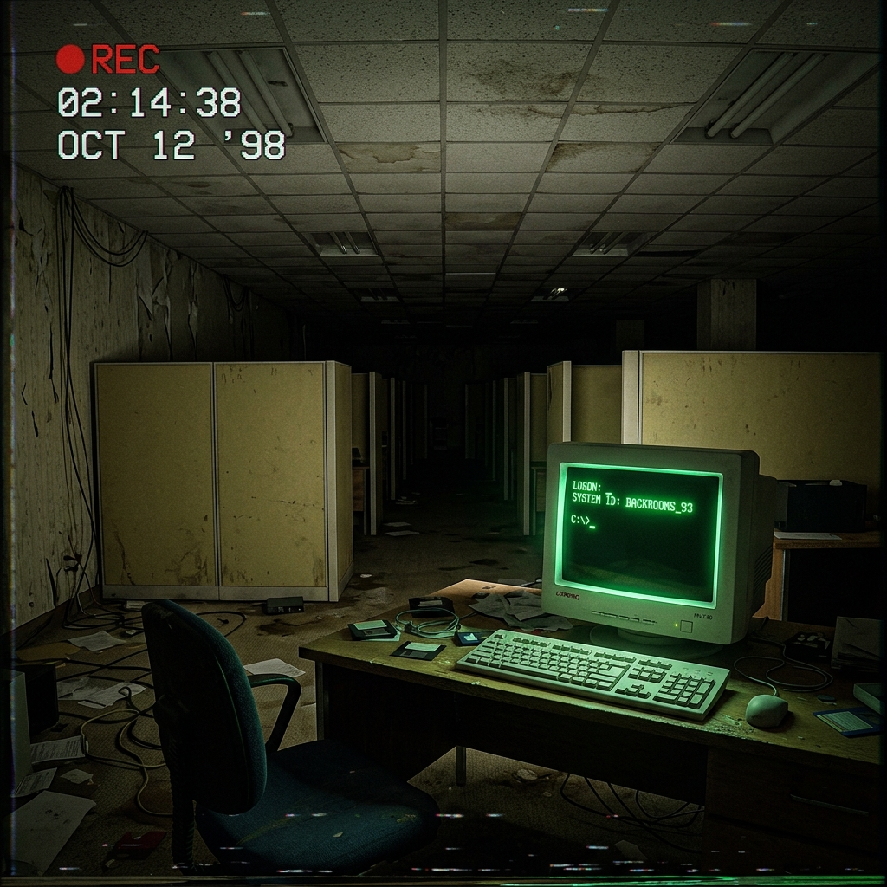

A dead, silent office block. Row upon row of empty cubicles stretch into the gloom. Coffee mugs contain petrified black mold, and old documents are scattered like dead leaves.
In the corner, a single retro computer monitor is alive, glowing with a pulsing green command-line interface. It buzzes softly, radiating heat. The cursor blinks with the patience of a predator.
At the back of the room, a heavy steel security gate is bound shut with rusted chains and a padlock. Blue light leaks through the crack beneath it.
This machine does not tell you the truth. It tells you which truths are currently indexed. Type help, map, listen, or oracle.